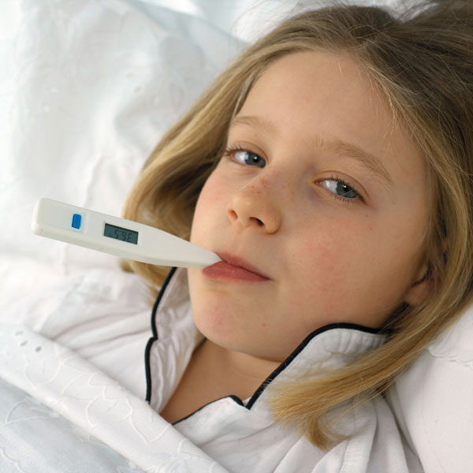

Febrile Convulsions
Febrile Convulsions
Febrile convulsions occur when a child has a high temperature. The growing brains of small children are more sensitive to fever than are more mature brains, and when the normal brain activity is upset a convulsion or 'fit' can occur.
Febrile convulsions are common and approximately three per cent of children aged six months to six years may have a convulsion when they have a high temperature. Thirty percent of children who have a febrile convulsion will have another episode.
Most children have a body temperature around 37º Celsius. You can take a child's temperature by placing the bulb of the thermometer under their armpit for three minutes with the arm held against their side.
The seizure affects not only the child, but also parents and bystanders who may not have observed this phenomenon before. As a first aid provider, it is part of your responsibility to reassure the witnesses. The greatest fear parents have is that the child is not breathing, and they think that death is imminent.

Signs and Symptoms
 previous history of infection
previous history of infection
 child is usually quiet, and appears sick
child is usually quiet, and appears sick
 flushed, hot skin
flushed, hot skin
 eyes 'roll back'
eyes 'roll back'
 have difficulty breathing
have difficulty breathing
 display jerking or twitching movements
display jerking or twitching movements
 may become stiff or floppy
may become stiff or floppy
 child begins convulsing
child begins convulsing
 salivary drool
salivary drool
 may become 'blue'
may become 'blue'
 after one to three minutes,child begins breathing normally
after one to three minutes,child begins breathing normally
 recovers, starts crying
recovers, starts crying
 become unconscious or unaware of their surroundings
become unconscious or unaware of their surroundings

Care and Treatment
For Child
 remain calm
remain calm
 protect child from harm
protect child from harm
 place something soft under head
place something soft under head
 loosen tight clothing
loosen tight clothing
 roll into recovery position when jerking stops or immediately if vomited
roll into recovery position when jerking stops or immediately if vomited
 reassure until fully recovered
reassure until fully recovered
 remove any excessive clothing
remove any excessive clothing
 on recovery, assess child's breathing – if not breathing normally - give CPR
on recovery, assess child's breathing – if not breathing normally - give CPR
 DO NOT put anything in the child's mouth
DO NOT put anything in the child's mouth
 DO NOT restrain the child
DO NOT restrain the child
For Parents / Bystanders
 reassure
reassure
 arrange to see the local doctor/general practitioner after the convulsion has stopped
arrange to see the local doctor/general practitioner after the convulsion has stopped
 discourage removal of child by persons other than ambulance personnel or trained medical assistance
discourage removal of child by persons other than ambulance personnel or trained medical assistance

When to call for an ambulance
 The seizure lasts longer than 5 minutes
The seizure lasts longer than 5 minutes
 Another seizure follows quickly
Another seizure follows quickly
 The child has difficulty breathing
The child has difficulty breathing
 The child looks particularly unwell
The child looks particularly unwell
Useful Resource
The Childrens Hospital at Westmead
http://www.chw.edu.au